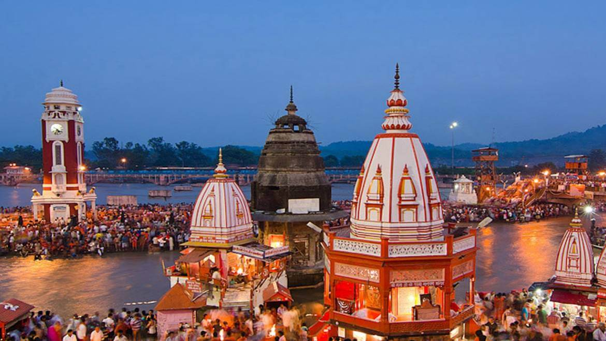

ALMORA

Almora is a municipal board and a cantonment town in the state of Uttarakhand, India. It is the administrative headquarters of Almora district.
AULI

Auli is a Himalayan ski resort and hill station in the north Indian state of Uttarakhand. It’s surrounded by coniferous and oak forests, plus the Nanda Devi and Nar Parvat mountains. A long cable car links Auli to the town of Joshimath. North of Auli are the colorful Badrinath Temple, a Hindu pilgrimage site, and the Valley of Flowers National Park, with its alpine flora and wildlife like snow leopards and red foxes.
CHOPTA HILL STATION
Chopta is famous for its monuments of historical and religious importance — from Chandrashila to the Tungnath Temple and more. It is also home to rare species of animals, plants and birds and welcomes birders as well as trekkers and other adventure sports enthusiasts.
HARIDWAR
Haridwar is an ancient city and important Hindu pilgrimage site in North India's Uttarakhand state, where the River Ganges exits the Himalayan foothills. The largest of several sacred ghats (bathing steps), Har Ki Pauri hosts a nightly Ganga Aarti (river-worshipping ceremony) in which tiny flickering lamps are floated off the steps. Worshipers fill the city during major festivals including the annual Kanwar Mela.
MUSSOORIE

Mussoorie is a hill station and a municipal board in the Dehradun district of the Indian state of Uttarakhand. It is about 35 kilometres from the state capital of Dehradun and 290 km north of the national capital of New Delhi. The hill station is in the foothills of the Garhwal Himalayan range.
NAINITAL
Nainital is a Himalayan resort town in the Kumaon region of India’s Uttarakhand state, at an elevation of roughly 2,000m. Formerly a British hill station, it’s set around Nainital Lake, a popular boating site with Naina Devi Hindu Temple on its north shore. A cable car runs to Snow View observation point (at 2,270m), with vistas over the town and mountains including Nanda Devi, Uttarakhand’s highest peak.
RISHIKESH
Rishikesh is a city in India’s northern state of Uttarakhand, in the Himalayan foothills beside the Ganges River. The river is considered holy, and the city is renowned as a center for studying yoga and meditation. Temples and ashrams (centers for spiritual studies) line the eastern bank around Swarg Ashram, a traffic-free, alcohol-free and vegetarian enclave upstream from Rishikesh town